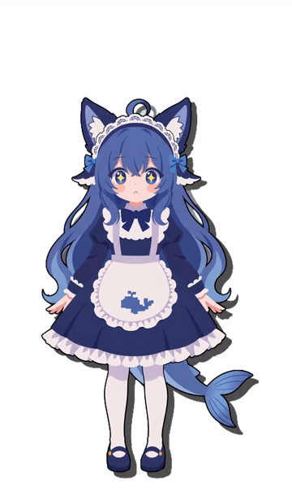

桌宠菜单
💬 和 DeepSeek 聊天…
🔍 文件搜索…
显示/隐藏控制面板
回到待机
⚙ 设置…
关闭菜单
🔍
↑↓ 选择
Enter 打开
Ctrl+Enter 打开所在文件夹
Ctrl+C 复制路径
Esc 关闭
DeepSeek-猫鲸

⚙
设置
DeepSeek API Key
显示
清除
未设置
API 网址（base URL）
模型（留空＝用 harness 默认）
Provider（留空＝用 harness 默认）
DeepSeek Harness 仓库路径
浏览…
重新探测
聊天前置条件：harness 仓库要先装好依赖（官方
pnpm install
）；只 clone 不装依赖会报 Cannot find package 'tsx'
环境自检：
打开自检 / 一键部署向导
保存
测试连接
🩺
环境自检
桌宠的「聊天」要用 DeepSeek Harness，「文件搜索」要用 Everything。两项都没装也能用其它功能，随时可从托盘菜单再来这里。
🧠
DeepSeek Harness（聊天）
检测中…
🔍
Everything（文件搜索）
检测中…
以后别再自动提示（仍可从托盘菜单打开本窗口）
重新检测
取消
关闭
DeepSeek 聊天
×
Enter 发送 · Shift+Enter 换行
发送 ↗
Esc 关闭窗口
停止生成
清空对话
DeepSeek-猫鲸
—
大小
340
速度
1.0x
打开菜单
⚙ 设置
模拟长任务
自动行为
脚下阴影
切换背景
透明模式
拖动 = 抓着状态，松手 = 落下接待机
单击角色 = 互动一下 · 右键 = 打开菜单
Ctrl+Shift+D 聊天 · Ctrl+Shift+F 文件搜索
按 H 隐藏面板 · 闲置 12 秒后自己摇尾/忙起来